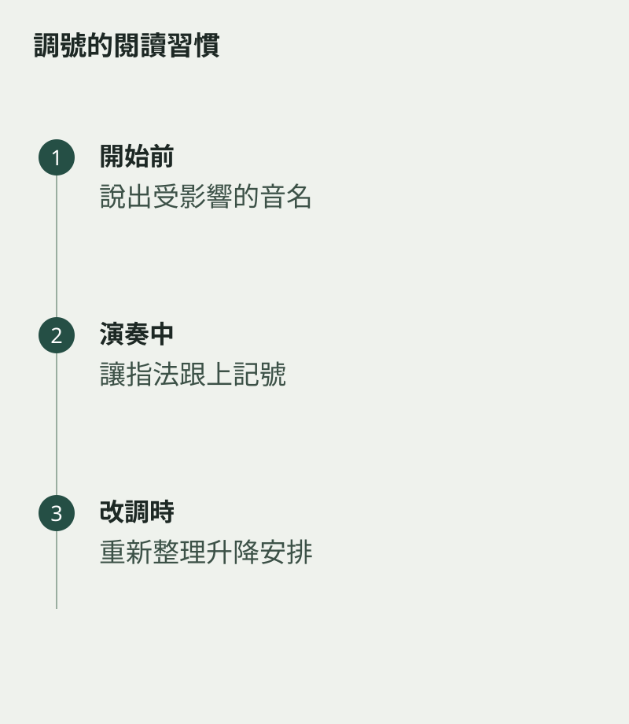

看完調號，吹到第三小節便忘記，往往是因為眼睛把它當成開場資料。調號會持續影響後面的讀譜，直到新的調號或相關記號改變。練新曲時，值得把受影響的音先找出來，而不只是說出調名。
同一個調號可以對應不同的調性，例如關係大調與小調。判斷作品調性還要看旋律、和聲與結束位置，不能只數幾個升降號便下結論。
先說出受影響的音
拿到樂譜，說一遍有哪些音要升或降，再在第一行找出它們。對吹管學生來說，也要確認相應指法已熟悉，否則讀懂了記號，手指仍可能回到舊習慣。
可以先練與樂曲相關的音階片段，讓耳朵和手指適應。這段準備不需很長，目的是進入相同的音高環境，而不是先把所有音階吹完才有資格練曲。

轉調時重新整理
遇到中途改調號，先停下看清楚哪些音的狀態改變。用鉛筆在段落旁寫簡短提示，避免沿用前段指法。熟悉後再逐步減少提示，回到直接閱讀譜面。
練完可以隨機指向曲中一個受影響的音，問自己應吹甚麼。能在不同位置回答，表示調號已不只停留在第一行。它像文章的語境，開頭建立之後，後面的每一句都在其中被理解。